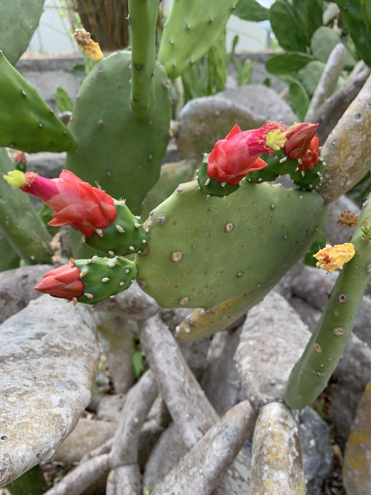

- The species name tells the whole story: cochenillifera means 'cochineal-bearing.' Aztec and Maya farmers cultivated this cactus specifically to farm the cochineal scale insect on its pads — and the brilliant carmine dye those tiny bugs produced became the second most valuable export from the Americas after silver, once the Spanish arrived.
- Most prickly pears open wide, flat flowers built for bees and flies. This one is different: its petals fold forward into a narrow tube, with protruding stamens and a nectar chamber near the base — a design that points directly at hummingbirds, and blooms in winter to meet migrating birds passing through.
- The variegated form you're looking at — pads splashed in green, cream, and pink — does not exist in the wild. It is a nursery-selected cultivar that arose as a spontaneous color mutation and is propagated entirely by cuttings.
- Spineless does not mean harmless. Every areole on these smooth, touchable-looking pads carries glochids — hair-fine, glass-hard, barbed bristles that detach at a feather-light touch, pierce skin instantly, and are nearly invisible once lodged. Tweezers and bright light are the minimum for removal. Please look, don't touch.
Opuntia cochenillifera is native to Mexico, where it grows in tropical dry forest and arid shrubland. Its precise wild range is uncertain — centuries of cultivation have spread it so widely across the Caribbean, Central America, and tropical regions worldwide that botanists classify its wild status as 'data deficient' on the IUCN Red List.
The species arrived in Florida as an ornamental and occasionally escapes cultivation, turning up in disturbed areas throughout the peninsula. The variegated cultivar grown here is a nursery selection that does not occur in the wild and is propagated entirely from cuttings.
- The species epithet cochenillifera — 'cochineal-bearing' — records an entire chapter of economic history. Mesoamerican farmers cultivated this cactus for the cochineal scale insect (Dactylopius coccus) that feeds on its pads. Females of that tiny insect produce carminic acid, a vivid red pigment comprising roughly 17 to 24 percent of their dried body weight.
- After the Spanish conquest, cochineal dye became Mexico's second most valuable export after silver. The Aztec emperor Moctezuma II commanded annual tributes of forty bags of dye from multiple provinces — and the production method was a Spanish state secret for two centuries. Today, carmine (labeled E120 in Europe) is still used in red lipstick, yogurt, and soft drinks.
- Taxonomically, this plant has been shuffled between two genera. It was long treated as Nopalea cochenillifera, a genus defined partly by its hummingbird-adapted, tubular flowers.
- Modern authorities, including Plants of the World Online and the Flora of North America, have folded Nopalea back into Opuntia — the genus is phylogenetically nested within it — so Opuntia cochenillifera is currently the accepted name.
The flowers are built for hummingbirds. Unlike the wide, open blooms typical of most prickly pears — which welcome bees and flies — this species produces tubular, reddish-pink flowers with protruding stamens and a nectar chamber near the base, a design matched to a hovering bird's bill.
The Flora of North America notes that Nopalea (now Opuntia) cochenillifera flowers in winter, timing its bloom to coincide with hummingbird migration.
Red, ellipsoid fruits follow the flowers and are taken by birds. The nearly spineless pads also make this cactus a host for cochineal scale insects — a piece of living natural history that visitors can spot as white, cottony patches on the pad surface. Crushing one reveals the famous carmine red inside.
In cultivation, propagation is almost entirely vegetative — pads (cladodes) detach and root readily in well-drained soil. The variegated cultivar is maintained exclusively this way, since seed-grown plants revert to the non-variegated form. The straight species also produces viable seed, dispersed by birds that eat the fruit.
Reddish-pink to orange-red, tubular flowers 4 to 7 cm long, with crowded pink filaments and a white style that protrude well beyond the petals. The flower tube and a nectar chamber near the base are specifically shaped for hummingbird pollination. Blooming typically occurs in late fall through winter on mature plants.
Ellipsoid to cylindrical red fruits 2.5 to 5 cm long follow the flowers. They are fleshy, juicy, and deeply umbilicate at the tip. The pads of fruiting growth may carry stiffer spines than the vegetative pads.
Linear to narrowly obovate pads, typically 15 to 35 cm long and 5 to 15 cm wide. On the straight species they are solid green; on the variegated cultivar they are mottled green, cream, and pink. Pads are nearly spineless — areoles are present but usually carry no true spines, or at most one to three short ones on older pads. All areoles carry glochids.
Mature plants develop a distinct trunk 15 to 20 cm in diameter and a branching, tree-like form. The base of older pads hardens and rounds into a woody trunk segment over time. The variegated cultivar tends to be somewhat smaller and slower-growing than the straight species.
The pads are the first thing to notice — long, narrow, and nearly spineless, with the swirling green-and-cream variegation that sets this cultivar apart from any other cactus in the garden. Look closely at the surface bumps (areoles): each one carries a tuft of tiny glochids, and you may see white cottony patches where cochineal insects have settled.
If the plant is in bloom, the tubular reddish-pink flowers appear at the top edges of the uppermost pads. In fruit, look for deep red, cylindrical pods with a sunken tip.
Spineless does not mean harmless — lead with that. Every areole on these smooth, inviting pads carries glochids: hair-fine, barbed bristles with the behavior of microscopic glass shards. They detach at a touch, penetrate skin immediately, and are nearly invisible once lodged, making removal genuinely difficult even with tweezers and good light. The blooms carry glochids too, not just the pads.
Keep children and pets away from direct contact.
The straight species' pads are edible when properly prepared — surface bumps scraped away, pad sliced and cooked — and are a traditional food in parts of Mexico; the fruits are also edible. The plant is not considered toxic to people or dogs. That said, the variegated ornamental cultivar here is a garden plant, not a food source, and preparation matters for any Opuntia pad.
The accepted scientific name carried by this plant has been unsettled for over 170 years. It was long treated as Nopalea cochenillifera — a separate genus defined by its tubular, hummingbird-adapted flower.
Current authorities, including Plants of the World Online and the Flora of North America, have merged Nopalea back into Opuntia; you may still see both names in nursery and botanical literature.
A pest worth knowing about in Florida: the cactus moth (Cactoblastis cactorum), introduced from Argentina, has spread into the southeastern U.S. and can bore into and hollow out Opuntia pads. UF/IFAS notes it as a known threat to both native and non-native Opuntias in the region. If you notice pads that look hollowed out or collapsing, remove and destroy them — do not compost.


- © averierob (CC-BY-NC), via iNaturalist
- © Ruby Meador (CC-BY-NC), via iNaturalist